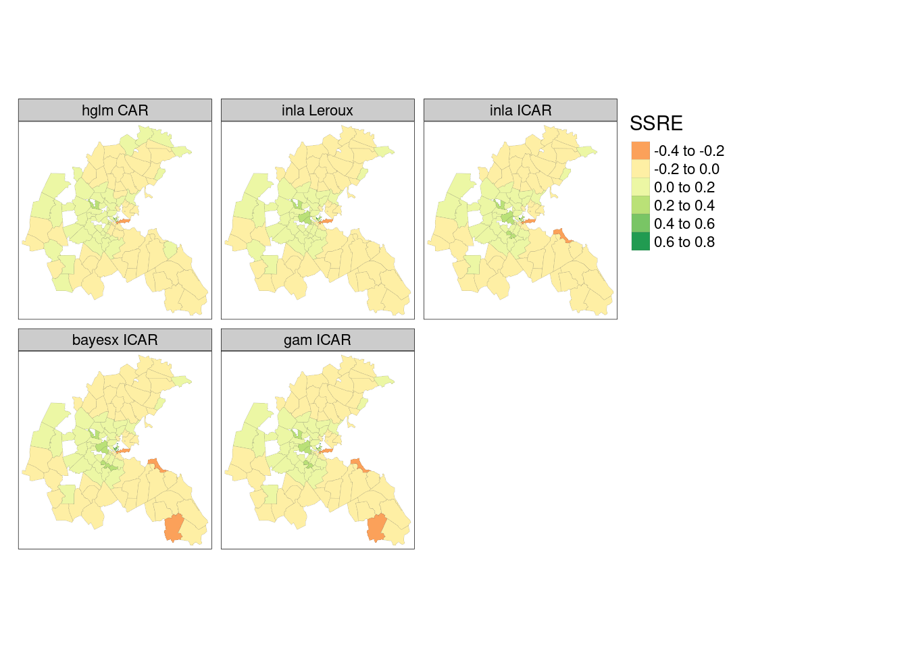

library(sf)
library(spData)
boston_506 <- st_read(system.file("shapes/boston_tracts.shp",
package = "spData")[1])
# Reading layer `boston_tracts' from data source
# `/home/edzer/R/x86_64-pc-linux-gnu-library/4.0/spData/shapes/boston_tracts.shp'
# using driver `ESRI Shapefile'
# Simple feature collection with 506 features and 36 fields
# Geometry type: POLYGON
# Dimension: XY
# Bounding box: xmin: -71.5 ymin: 42 xmax: -70.6 ymax: 42.7
# Geodetic CRS: NAD2715 Spatial Regression
Even though it may be tempting to focus on interpreting the map pattern of an areal support response variable of interest, the pattern may largely derive from covariates (and their functional forms), as well as the respective spatial footprints of the variables in play. Spatial autoregressive models in two dimensions began without covariates and with clear links to time series (Whittle 1954). Extensions included tests for spatial autocorrelation in linear model residuals, and models applying the autoregressive component to the response or the residuals, where the latter matched the tests for residuals (A. Cliff and Ord 1972; A. D. Cliff and Ord 1973). These “lattice” models of areal data typically express the dependence between observations using a graph of neighbours in the form of a contiguity matrix.
Of course, handling a spatial correlation structure in a generalised least squares model or a (generalized) linear or nonlinear mixed effects model such as those provided in the nlme and many other packages does not have to use a graph of neighbours (Pinheiro and Bates 2000). These models are also spatial regression models, using functions of the distance between observations, and fitted variograms to model the spatial autocorrelation present; such models have been held to yield a clearer picture of the underlying processes (Wall 2004), building on geostatistics. For example, the glmmTMB package successfully uses this approach to spatial regression (Brooks et al. 2017). Here we will only consider spatial regression using spatial weights matrices.
15.1 Markov random field and multilevel models
There is a large literature in disease mapping using conditional autoregressive (CAR) and intrinsic CAR (ICAR) models in spatially structured random effects. These extend to multilevel models, in which the spatially structured random effects may apply at different levels of the model (Roger S. Bivand et al. 2017). In order to try out some of the variants, we need to remove the no-neighbour observations from the tract level, and from the model output zone aggregated level, in two steps as reducing the tract level induces a no-neighbour outcome at the model output zone level. Many of the model estimating functions take family= arguments, and fit generalized linear mixed effects models with per-observation spatial random effects structured using a Markov random field representation of relationships between neighbours. In the multilevel case, the random effects may be modelled at the group level, which is the case presented in the following examples.
We follow V. Gómez-Rubio (2019) in summarizing Pinheiro and Bates (2000) and McCulloch and Searle (2001) to describe the mixed-effects model representation of spatial regression models. In a Gaussian linear mixed model setting, a random effect \(u\) is added to the model, with response \(Y\), fixed covariates \(X\), their coefficients \(\beta\) and error term \(\varepsilon_i \sim N(0, \sigma^2), i=1,\dots, n\):
\[ Y = X \beta + Z u + \varepsilon \]
\(Z\) is a fixed design matrix for the random effects. If there are \(n\) random effects, it will be an \(n \times n\) identity matrix, if instead the observations are aggregated into \(m\) groups, so with \(m < n\) random effects, it will be an \(n \times m\) matrix showing which group each observation belongs to. The random effects are modelled as a multivariate Normal distribution \(u \sim N(0, \sigma^2_u \Sigma)\), and \(\Sigma\) is the square variance-covariance matrix of the random effects.
A division has grown up, possibly unhelpfully, between scientific fields using CAR models (Besag 1974), and simultaneous autoregressive models (SAR) (Ord 1975; Hepple 1976). Although CAR and SAR models are closely related, these fields have found it difficult to share experience of applying similar models, often despite referring to key work summarising the models (Ripley 1981, 1988; Cressie 1993). Ripley gives the SAR variance as (1981, 89), here shown as the inverse \(\Sigma^{-1}\) (also known as the precision matrix):
\[ \Sigma^{-1} = [(I - \rho W)'(I - \rho W)] \]
where \(\rho\) is a spatial autocorrelation parameter and \(W\) is a nonsingular spatial weights matrix that represents spatial dependence. The CAR variance is:
\[ \Sigma^{-1} = (I - \rho W) \]
where \(W\) is a symmetric and strictly positive definite spatial weights matrix. In the case of the intrinsic CAR model, avoiding the estimation of a spatial autocorrelation parameter, we have:
\[ \Sigma^{-1} = M = \mathrm{diag}(n_i) - W \]
where \(W\) is a symmetric and strictly positive definite spatial weights matrix as before and \(n_i\) are the row sums of \(W\). The Besag-York-Mollié model includes intrinsic CAR spatially structured random effects and an unstructured random effects. The Leroux model combines matrix components for unstructured and spatially structured random effects, where the spatially structured random effects are taken as following an intrinsic CAR specification:
\[ \Sigma^{-1} = [(1 - \rho) I_n + \rho M] \]
References to the definitions of these models may be found in V. Gómez-Rubio (2020), and estimation issues affecting the Besag-York-Mollié and Leroux models are reviewed by Gerber and Furrer (2015).
More recent books expounding the theoretical bases for modelling with areal data simply point out the similarities between SAR and CAR models in relevant chapters (Gaetan and Guyon 2010; Lieshout 2019); the interested reader is invited to consult these sources for background information.
Boston house value data set
Here we shall use the Boston housing data set, which has been restructured and furnished with census tract boundaries (R. Bivand 2017). The original data set used 506 census tracts and a hedonic model to try to estimate willingness to pay for clean air. The response was constructed from counts of ordinal answers to a 1970 census question about house value. The response is left and right censored in the census source and has been treated as Gaussian. The key covariate was created from a calibrated meteorological model showing the annual nitrogen oxides (NOX) level for a smaller number of model output zones. The numbers of houses responding also varies by tract and model output zone. There are several other covariates, some measured at the tract level, some by town only, where towns broadly correspond to the air pollution model output zones.
We can start by reading in the 506 tract data set from spData (R. Bivand, Nowosad, and Lovelace 2021), and creating a contiguity neighbour object and from that again a row standardized spatial weights object.
nb_q <- spdep::poly2nb(boston_506)
lw_q <- spdep::nb2listw(nb_q, style = "W")If we examine the median house values, we find that those for censored values have been assigned as missing, and that 17 tracts are affected.
table(boston_506$censored)
#
# left no right
# 2 489 15summary(boston_506$median)
# Min. 1st Qu. Median Mean 3rd Qu. Max. NA's
# 5600 16800 21000 21749 24700 50000 17Next, we can subset to the remaining 489 tracts with non-censored house values, and the neighbour object to match. The neighbour object now has one observation with no neighbours.
boston_506$CHAS <- as.factor(boston_506$CHAS)
boston_489 <- boston_506[!is.na(boston_506$median),]
nb_q_489 <- spdep::poly2nb(boston_489)
lw_q_489 <- spdep::nb2listw(nb_q_489, style = "W",
zero.policy = TRUE)The NOX_ID variable specifies the upper level aggregation, letting us aggregate the tracts to air pollution model output zones. We can create aggregate neighbour and row standardized spatial weights objects, and aggregate the NOX variable taking means, and the CHAS Charles River dummy variable for observations on the river. Here we follow the principles outlined in Section 5.3.1 for spatially extensive and intensive variables; neither NOX nor CHAS can be summed as they are not count variables.
agg_96 <- list(as.character(boston_506$NOX_ID))
boston_96 <- aggregate(boston_506[, "NOX_ID"], by = agg_96,
unique)
nb_q_96 <- spdep::poly2nb(boston_96)
lw_q_96 <- spdep::nb2listw(nb_q_96)
boston_96$NOX <- aggregate(boston_506$NOX, agg_96, mean)$x
boston_96$CHAS <-
aggregate(as.integer(boston_506$CHAS)-1, agg_96, max)$xThe response is aggregated using the weightedMedian() function in matrixStats, and midpoint values for the house value classes. Counts of houses by value class were punched to check the published census values, which can be replicated using weightedMedian() at the tract level. Here we find two output zones with calculated weighted medians over the upper census question limit of USD 50,000, and remove them subsequently as they also are affected by not knowing the appropriate value to insert for the top class by value. This is a case of spatially extensive aggregation, for which the summation of counts is appropriate:
nms <- names(boston_506)
ccounts <- 23:31
for (nm in nms[c(22, ccounts, 36)]) {
boston_96[[nm]] <- aggregate(boston_506[[nm]], agg_96, sum)$x
}
br2 <- c(3.50, 6.25, 8.75, 12.5, 17.5, 22.5, 30, 42.5, 60) * 1000
counts <- as.data.frame(boston_96)[, nms[ccounts]]
f <- function(x) matrixStats::weightedMedian(x = br2, w = x,
interpolate = TRUE)
boston_96$median <- apply(counts, 1, f)
is.na(boston_96$median) <- boston_96$median > 50000
summary(boston_96$median)
# Min. 1st Qu. Median Mean 3rd Qu. Max. NA's
# 9009 20417 23523 25263 30073 49496 2Before subsetting, we aggregate the remaining covariates by weighted mean using the tract population counts punched from the census (R. Bivand 2017); these are spatially intensive variables, not count data.
boston_94 <- boston_96[!is.na(boston_96$median),]
nb_q_94 <- spdep::subset.nb(nb_q_96, !is.na(boston_96$median))
lw_q_94 <- spdep::nb2listw(nb_q_94, style="W")We now have two data sets at each level, at the lower, census tract level, and at the upper, air pollution model output zone level, one including the censored observations, the other excluding them.
boston_94a <- aggregate(boston_489[,"NOX_ID"],
list(boston_489$NOX_ID), unique)
nb_q_94a <- spdep::poly2nb(boston_94a)
NOX_ID_no_neighs <-
boston_94a$NOX_ID[which(spdep::card(nb_q_94a) == 0)]
boston_487 <- boston_489[is.na(match(boston_489$NOX_ID,
NOX_ID_no_neighs)),]
boston_93 <- aggregate(boston_487[, "NOX_ID"],
list(ids = boston_487$NOX_ID), unique)
row.names(boston_93) <- as.character(boston_93$NOX_ID)
nb_q_93 <- spdep::poly2nb(boston_93,
row.names = unique(as.character(boston_93$NOX_ID)))The original model related the log of median house values by tract to the square of NOX values, including other covariates usually related to house value by tract, such as aggregate room counts, aggregate age, ethnicity, social status, distance to downtown and to the nearest radial road, a crime rate, and town-level variables reflecting land use (zoning, industry), taxation and education (R. Bivand 2017). This structure will be used here to exercise issues raised in fitting spatial regression models, including the presence of multiple levels.
15.2 Multilevel models of the Boston data set
The ZN, INDUS, NOX, RAD, TAX and PTRATIO variables show effectively no variability within the TASSIM zones, so in a multilevel model the random effect may absorb their influence.
form <- formula(log(median) ~ CRIM + ZN + INDUS + CHAS +
I((NOX*10)^2) + I(RM^2) + AGE + log(DIS) +
log(RAD) + TAX + PTRATIO + I(BB/100) +
log(I(LSTAT/100)))IID random effects with lme4
The lme4 package (Bates et al. 2022) lets us add an independent and identically distributed (IID) unstructured random effect at the model output zone level by updating the model formula with a random effects term:
library(Matrix)
library(lme4)
MLM <- lmer(update(form, . ~ . + (1 | NOX_ID)), data = boston_487,
REML = FALSE)Copying the random effect into the "sf" object for mapping is performed below.
boston_93$MLM_re <- ranef(MLM)[[1]][,1]IID and CAR random effects with hglm
The same model may be estimated using the hglm package (Alam, Ronnegard, and Shen 2019), which also permits the modelling of discrete responses, this time using an extra one-sided formula to express the random effects term:
suppressPackageStartupMessages(library(hglm))
suppressWarnings(HGLM_iid <- hglm(fixed = form,
random = ~1 | NOX_ID,
data = boston_487,
family = gaussian()))
boston_93$HGLM_re <- unname(HGLM_iid$ranef)The same package has been extended to spatially structured SAR and CAR random effects, for which a sparse spatial weights matrix is required (Alam, Rönnegård, and Shen 2015); we choose binary spatial weights:
library(spatialreg)
W <- as(spdep::nb2listw(nb_q_93, style = "B"), "CsparseMatrix")We fit a CAR model at the upper level, using the rand.family= argument, where the values of the indexing variable NOX_ID match the row names of \(W\):
suppressWarnings(HGLM_car <- hglm(fixed = form,
random = ~ 1 | NOX_ID,
data = boston_487,
family = gaussian(),
rand.family = CAR(D=W)))
boston_93$HGLM_ss <- HGLM_car$ranef[,1]IID and ICAR random effects with R2BayesX
The R2BayesX package (Umlauf et al. 2022) provides flexible support for structured additive regression models, including spatial multilevel models. The models include an IID unstructured random effect at the upper level using the "re" specification in the sx() model term (Umlauf et al. 2015); we choose the "MCMC" method:
suppressPackageStartupMessages(library(R2BayesX))BX_iid <- bayesx(update(form, . ~ . + sx(NOX_ID, bs = "re")),
family = "gaussian", data = boston_487,
method = "MCMC", iterations = 12000,
burnin = 2000, step = 2, seed = 123)boston_93$BX_re <- BX_iid$effects["sx(NOX_ID):re"][[1]]$Meanand the "mrf" (Markov Random Field) spatially structured intrinsic CAR random effect specification based on a graph derived from converting a suitable "nb" object for the upper level. The "region.id" attribute of the "nb" object needs to contain values corresponding to the indexing variable in the sx() effects term, to facilitate the internal construction of design matrix \(Z\):
RBX_gra <- nb2gra(nb_q_93)
all.equal(row.names(RBX_gra), attr(nb_q_93, "region.id"))
# [1] TRUEAs we saw above in the intrinsic CAR model definition, the counts of neighbours are entered on the diagonal, but the current implementation uses a dense, not sparse, matrix:
all.equal(unname(diag(RBX_gra)), spdep::card(nb_q_93))
# [1] TRUEThe sx() model term continues to include the indexing variable, and now passes through the intrinsic CAR precision matrix:
BX_mrf <- bayesx(update(form, . ~ . + sx(NOX_ID, bs = "mrf",
map = RBX_gra)),
family = "gaussian", data = boston_487,
method = "MCMC", iterations = 12000,
burnin = 2000, step = 2, seed = 123)boston_93$BX_ss <- BX_mrf$effects["sx(NOX_ID):mrf"][[1]]$MeanIID, ICAR and Leroux random effects with INLA
R. Bivand, Gómez-Rubio, and Rue (2015) and V. Gómez-Rubio (2020) present the use of the INLA package (Rue, Lindgren, and Teixeira Krainski 2022) and the inla() model fitting function with spatial regression models:
suppressPackageStartupMessages(library(INLA))Although differing in details, the approach by updating the fixed model formula with an unstructured random effects term is very similar to that seen above:
INLA_iid <- inla(update(form, . ~ . + f(NOX_ID, model = "iid")),
family = "gaussian", data = boston_487)boston_93$INLA_re <- INLA_iid$summary.random$NOX_ID$meanAs with most implementations, care is needed to match the indexing variable with the spatial weights; in this case using indices \(1, \dots, 93\) rather than the NOX_ID variable directly:
ID2 <- as.integer(as.factor(boston_487$NOX_ID))The same sparse binary spatial weights matrix is used, and the intrinsic CAR representation is constructed internally:
INLA_ss <- inla(update(form, . ~ . + f(ID2, model = "besag",
graph = W)),
family = "gaussian", data = boston_487)boston_93$INLA_ss <- INLA_ss$summary.random$ID2$meanThe sparse Leroux representation as given by V. Gómez-Rubio (2020) can be constructed in the following way:
M <- Diagonal(nrow(W), rowSums(W)) - W
Cmatrix <- Diagonal(nrow(M), 1) - MThis model can be estimated using the "generic1" model with the specified precision matrix:
INLA_lr <- inla(update(form, . ~ . + f(ID2, model = "generic1",
Cmatrix = Cmatrix)),
family = "gaussian", data = boston_487)boston_93$INLA_lr <- INLA_lr$summary.random$ID2$meanICAR random effects with mgcv::gam()
In a very similar way, the gam() function in the mgcv package (S. Wood 2022) can take an "mrf" term using a suitable "nb" object for the upper level. In this case the "nb" object needs to have the contents of the "region.id" attribute copied as the names of the neighbour list components, and the indexing variable needs to be a factor (S. N. Wood 2017):
library(mgcv)
names(nb_q_93) <- attr(nb_q_93, "region.id")
boston_487$NOX_ID <- as.factor(boston_487$NOX_ID)The specification of the spatially structured term again differs in details from those above, but achieves the same purpose. The "REML" method of bayesx() gives the same results as gam() using "REML" in this case:
GAM_MRF <- gam(update(form, . ~ . + s(NOX_ID, bs = "mrf",
xt = list(nb = nb_q_93))),
data = boston_487, method = "REML")The upper level random effects may be extracted by predicting terms; as we can see, the values in all lower-level tracts belonging to the same upper-level air pollution model output zones are identical:
ssre <- predict(GAM_MRF, type = "terms",
se = FALSE)[, "s(NOX_ID)"]
all(sapply(tapply(ssre, list(boston_487$NOX_ID), c),
function(x) length(unique(x)) == 1))
# [1] FALSEso we can return the first value for each upper-level unit:
boston_93$GAM_ss <- aggregate(ssre, list(boston_487$NOX_ID),
head, n=1)$xUpper level random effects: summary
In the cases of hglm(), bayesx(), inla() and gam(), we could also model discrete responses without further major difficulty, and bayesx(), inla() and gam() also facilitate the generalization of functional form fitting for included covariates.
Unfortunately, the coefficient estimates for the air pollution variable for these multilevel models are not helpful. All are negative as expected, but the inclusion of the model output zone level effects, IID or spatially structured, makes it is hard to disentangle the influence of the scale of observation from that of covariates observed at that scale rather than at the tract level.
Figure 15.1 shows that the air pollution model output zone level IID random effects are very similar across the four model fitting functions reported. In all the maps, the central downtown zones have stronger negative random effect values, but strong positive values are also found in close proximity; suburban areas take values closer to zero.
library(tmap, warn.conflicts=FALSE)
tm_shape(boston_93) +
tm_fill(c("MLM_re", "HGLM_re", "INLA_re", "BX_re"),
midpoint = 0, title = "IID") +
tm_facets(free.scales = FALSE) +
tm_borders(lwd = 0.3, alpha = 0.4) +
tm_layout(panel.labels = c("lmer", "hglm", "inla", "bayesx"))
log(median) is 2.1893Figure 15.2 shows that the spatially structured random effects are also very similar to each other, with the "SAR" spatial smooth being perhaps a little smoother than the "CAR" smooths when considering the range of values taken by the random effect term.
tm_shape(boston_93) +
tm_fill(c("HGLM_ss", "INLA_lr", "INLA_ss", "BX_ss", "GAM_ss"),
midpoint = 0, title = "SSRE") +
tm_facets(free.scales = FALSE) +
tm_borders(lwd = 0.3, alpha = 0.4) +
tm_layout(panel.labels = c("hglm CAR", "inla Leroux",
"inla ICAR", "bayesx ICAR",
"gam ICAR"))
Although there is still a great need for more thorough comparative studies of model fitting functions for spatial regression including multilevel capabilities, there has been much progress over recent years. Vranckx, Neyens, and Faes (2019) offer a recent comparative survey of disease mapping spatial regression, typically set in a Poisson regression framework offset by an expected count. In Roger S. Bivand and Gómez-Rubio (2021), methods for estimating spatial survival models using spatial weights matrices are compared with spatial probit models.
15.3 Exercises
- Construct a multilevel dataset using the Athens housing data in HSAR, as in the vignette: https://cran.r-project.org/web/packages/HSAR/vignettes/PropertiesAthens.html. At which point do the municipality department attribute values get copied out to all the point observations within each municipality department?
- Create neighbour objects at both levels. Test
greenspfor spatial autocorrelation at the upper level, and then at the lower level. What has been the chief consequence of copying out the area of green spaces in square meters for the municipality departments to the point support property level? - Using the formula object from the vignette, assess whether adding the copied out upper level variables seems sensible. Use
mgcv::gam()to fit a linear mixed effects model (IID ofnum_depidentifying the municipality departments) using just the lower level variables and the lower and upper level variables. Do your conclusions differ? - Complete the analysis by replacing the IID random effects with an
"mrf"Markov random field and the contiguity neighbour object created above. Do you think that it is reasonable to for example draw any conclusions based on the municipality department level variables such asgreensp?
16 Spatial econometrics models
Spatial autoregression models using spatial weights matrices were described in some detail using maximum likelihood estimation some time ago (A. D. Cliff and Ord 1973, 1981). A family of models was elaborated in spatial econometric terms extending earlier work, and in many cases using the simultaneous autoregressive framework and row standardization of spatial weights (Anselin 1988). The simultaneous and conditional autoregressive frameworks can be compared, and both can be supplemented using case weights to reflect the relative importance of different observations (Waller and Gotway 2004).
Before moving to presentations of issues raised in fitting spatial regression models, it is worth making a few further points. A recent review of spatial regression in a spatial econometrics setting is given by Kelejian and Piras (2017); note that their usage is to call the spatial coefficient of the lagged response \(\lambda\) and that of the lagged residuals \(\rho\), the reverse of other usage (Anselin 1988; James P. LeSage and Pace 2009); here we use \(\rho_{\mathrm{Lag}}\) for the spatial coefficient in the spatial lag model, and \(\rho_{\mathrm{Err}}\) for the spatial error model. One interesting finding is that relatively dense spatial weights matrices may downweight model estimates, suggesting that sparser weights are preferable (Tony E. Smith 2009). Another useful finding is that the presence of residual spatial autocorrelation need not bias the estimates of variance of regression coefficients, provided that the covariates themselves do not exhibit spatial autocorrelation (T. E. Smith and Lee 2012). In general, however, the footprints of the spatial processes of the response and covariates may not be aligned, and if covariates and the residual are autocorrelated, it is likely that the estimates of variance of regression coefficients will be biassed downwards if attempts are not made to model the spatial processes.
16.1 Spatial econometric models: definitions
In trying to model spatial processes, one of the earliiest spatial econometric representations is to model the spatial autocorrelation in the residual (spatial error model, SEM):
\[ {\mathbf y} = {\mathbf X}{\mathbf \beta} + {\mathbf u}, \qquad {\mathbf u} = \rho_{\mathrm{Err}} {\mathbf W} {\mathbf u} + {\mathbf \varepsilon}, \]
where \({\mathbf y}\) is an \((N \times 1)\) vector of observations on a response variable taken at each of \(N\) locations, \({\mathbf X}\) is an \((N \times k)\) matrix of covariates, \({\mathbf \beta}\) is a \((k \times 1)\) vector of parameters, \({\mathbf u}\) is an \((N \times 1)\) spatially autocorrelated disturbance vector, \({\mathbf \varepsilon}\) is an \((N \times 1)\) vector of independent and identically distributed disturbances and \(\rho_{\mathrm{Err}}\) is a scalar spatial parameter.
This model, and other spatial econometric models, do not fit into the mixed models framework. Here the modelled spatial process interacts directly with the response, covariates, and their coefficients. This modelling framework appears to draw on an older tradition extending time series to two dimensions:
\[ {\mathbf u} = ({\mathbf I} - \rho_{\mathrm{Err}} {\mathbf W})^{-1} {\mathbf \varepsilon}, \ \ {\mathbf y} = {\mathbf X}{\mathbf \beta} + ({\mathbf I} - \rho_{\mathrm{Err}} {\mathbf W})^{-1} {\mathbf \varepsilon}, \ \ ({\mathbf I} - \rho_{\mathrm{Err}} {\mathbf W}) {\mathbf y} = ({\mathbf I} - \rho_{\mathrm{Err}} {\mathbf W}) {\mathbf X}{\mathbf \beta} + {\mathbf \varepsilon}. \]
If the processes in the covariates and the response match, we should find little difference between the coefficients of a least squares and a SEM, but very often they diverge, suggesting that a Hausman test for this condition should be employed (Pace and LeSage 2008). This may be related to earlier discussions of a spatial equivalent to the unit root and cointegration where spatial processes match (Fingleton 1999).
A model with a spatial process in the response only is termed a spatial lag model (SLM, often SAR - spatial autoregressive) (James P. LeSage and Pace 2009). Durbin models add the spatially lagged covariates to the covariates included in the spatial model; spatial Durbin models are reviewed by Mur and Angulo (2006). If it is chosen to admit a spatial process in the residuals in addition to a spatial process in the response, again two models are formed, a general nested model (GNM) nesting all the others, and a model without spatially lagged covariates (SAC, also known as SARAR - Spatial AutoRegressive-AutoRegressive model). If neither the residuals nor the response are modelled with spatial processes, spatially lagged covariates may be added to a linear model, as a spatially lagged X model (SLX) (Elhorst 2010; Roger S. Bivand 2012; J. P. LeSage 2014; Halleck Vega and Elhorst 2015). We can write the general nested model (GNM) as:
\[ {\mathbf y} = \rho_{\mathrm{Lag}} {\mathbf W}{\mathbf y} + {\mathbf X}{\mathbf \beta} + {\mathbf W}{\mathbf X}{\mathbf \gamma} + {\mathbf u}, \qquad {\mathbf u} = \rho_{\mathrm{Err}} {\mathbf W} {\mathbf u} + {\mathbf \varepsilon}, \]
where \({\mathbf \gamma}\) is a \((k' \times 1)\) vector of parameters. \(k'\) defines the subset of the intercept and covariates, often \(k' = k-1\) when using row standardised spatial weights and omitting the spatially lagged intercept.
This may be constrained to the double spatial coefficient model SAC/SARAR by setting \({\mathbf \gamma} = 0\), to the spatial Durbin (SDM) by setting \(\rho_{\mathrm{Err}} = 0\), and to the error Durbin model (SDEM) by setting \(\rho_{\mathrm{Lag}} = 0\). Imposing more conditions gives the spatial lag model (SLM) with \({\mathbf \gamma} = 0\) and \(\rho_{\mathrm{Err}} = 0\), the spatial error model (SEM) with \({\mathbf \gamma} = 0\) and \(\rho_{\mathrm{Lag}} = 0\), and the spatially lagged X model (SLX) with \(\rho_{\mathrm{Lag}} = 0\) and \(\rho_{\mathrm{Err}} = 0\).
Although making predictions for new locations for which covariates are observed was raised as an issue some time ago, it has taken many years to make progress in reviewing the possibilities (R. S. Bivand 2002; Goulard, Laurent, and Thomas-Agnan 2017; Laurent and Margaretic 2021). The prediction methods for SLM, SDM, SEM, SDEM, SAC and GNM models fitted with maximum likelihood were contributed as a Google Summer of Coding project by Martin Gubri. This work, and work on similar models with missing data (Suesse 2018) is also relevant for exploring censored median house values in the Boston data set. Work on prediction also exposed the importance of the reduced form of these models, in which the spatial process in the response interacts with the regression coefficients in the SLM, SDM, SAC and GNM models.
The consequence of these interactions is that a unit change in a covariate will only impact the response as the value of the regression coefficient if the spatial coefficient of the lagged response is zero. Where it is non-zero, global spillovers, impacts, come into play, and these impacts should be reported rather than the regression coefficients (James P. LeSage and Pace 2009; Elhorst 2010; Roger S. Bivand 2012; J. P. LeSage 2014; Halleck Vega and Elhorst 2015). Local impacts may be reported for SDEM and SLX models, using linear combination to calculate standard errors for the total impacts of each covariate (sums of coefficients on the covariates and their spatial lags).
This can be seen from the GNM data generation process:
\[ ({\mathbf I} - \rho_{\mathrm{Err}} {\mathbf W})({\mathbf I} - \rho_{\mathrm{Lag}} {\mathbf W}){\mathbf y} = ({\mathbf I} - \rho_{\mathrm{Err}} {\mathbf W})({\mathbf X}{\mathbf \beta} + {\mathbf W}{\mathbf X}{\mathbf \gamma}) + {\mathbf \varepsilon}, \]
re-writing:
\[ {\mathbf y} = ({\mathbf I} - \rho_{\mathrm{Lag}} {\mathbf W})^{-1}({\mathbf X}{\mathbf \beta} + {\mathbf W}{\mathbf X}{\mathbf \gamma}) + ({\mathbf I} - \rho_{\mathrm{Lag}} {\mathbf W})^{-1}({\mathbf I} - \rho_{\mathrm{Err}} {\mathbf W})^{-1}{\mathbf \varepsilon}. \]
There is interaction between the \(\rho_{\mathrm{Lag}}\) and \({\mathbf \beta}\) (and \({\mathbf \gamma}\) if present) coefficients. This can be seen from the partial derivatives: \(\partial y_i / \partial x_{jr} = (({\mathbf I} - \rho_{\mathrm{Lag}} {\mathbf W})^{-1} ({\mathbf I} \beta_r + {\mathbf W} \gamma_r))_{ij}\). This dense matrix \(S_r({\mathbf W}) = (({\mathbf I} - \rho_{\mathrm{Lag}} {\mathbf W})^{-1} ({\mathbf I} \beta_r + {\mathbf W} \gamma_r))\) expresses the direct impacts (effects) on its principal diagonal, and indirect impacts in off-diagonal elements.
Piras and Prucha (2014) revisit and correct Raymond J. G. M. Florax, Folmer, and Rey (2003) (see also comments by Hendry (2006) and Raymond J. G. M. Florax, Folmer, and Rey (2006)), finding that the common use of pre-test strategies for model selection probably ought to be replaced by the estimation of the most general model appropriate for the relationships being modelled. In the light of this finding, pre-test model selection will not be used here.
Current work in the spatialreg package is focused on refining the handling of spatially lagged covariates using a consistent Durbin= argument taking either a logical value or a formula giving the subset of covariates to add in spatially lagged form. There is a speculation that some covariates, for example some dummy variables, should not be added in spatially lagged form. This then extends to handling these included spatially lagged covariates appropriately in calculating impacts. This work applies to cross-sectional models fitted using MCMC or maximum likelihood, and will offer facilities to spatial panel models.
It is worth mentioning the almost unexplored issues of functional form assumptions, for which flexible structures are useful, including spatial quantile regression presented in the McSpatial package (McMillen 2013). There are further issues with discrete response variables, covered by some functions in McSpatial, and in the spatialprobit and ProbitSpatial packages (Wilhelm and Matos 2013; Martinetti and Geniaux 2017); the MCMC implementations of the former are based on LeSage and Pace (2009). Finally, Wagner and Zeileis (2019) show how an SLM model may be used in the setting of recursive partitioning, with an implementation using spatialreg::lagsarlm() in the lagsarlmtree package.
The review of cross-sectional maximum likelihood and generalized method of moments (GMM) estimators in spatialreg (R. Bivand and Piras 2022) and sphet for spatial econometrics style spatial regression models by Bivand and Piras (2015) is still largely valid. In the review, estimators in these R packages were compared with alternative implementations available in other programming languages elsewhere. The review did not cover Bayesian spatial econometrics style spatial regression. More has changed with respect to spatial panel estimators described in Millo and Piras (2012), but will not be covered here.
Because R. Bivand, Millo, and Piras (2021) covers many of the features of R packages for spatial econometrics, updating Roger S. Bivand and Piras (2015), and including recent advances in General Method of Moments and spatial panel modelling, this chapter will be restricted to a small number of examples drawing on R. Bivand (2017) using the Boston house value data set.
16.2 Maximum likelihood estimation in spatialreg
For models with single spatial coefficients (SEM and SDEM using errorsarlm(), SLM and SDM using lagsarlm()), the methods initially described by Ord (1975) are used. The following table shows the functions that can be used to estimate the models described above using maximum likelihood.
| model | model name | maximum likelihood estimation function |
|---|---|---|
| SEM | spatial error | errorsarlm(..., Durbin=FALSE) |
| SEM | spatial error | spautolm(..., family="SAR") |
| SDEM | spatial Durbin error | errorsarlm(..., Durbin=TRUE) |
| SLM | spatial lag | lagsarlm(..., Durbin=FALSE) |
| SDM | spatial Durbin | lagsarlm(..., Durbin=TRUE) |
| SAC | spatial autoregressive combined | sacsarlm(..., Durbin=FALSE) |
| GNM | general nested | sacsarlm(..., Durbin=TRUE) |
The estimating functions errorsarlm() and lagsarlm() take similar arguments, where the first two, formula= and data= are shared by most model estimating functions. The third argument is a listw spatial weights object, while na.action= behaves as in other model estimating functions if the spatial weights can reasonably be subsetted to avoid observations with missing values. The weights= argument may be used to provide weights indicating the known degree of per-observation variability in the variance term - this is not available for lagsarlm().
The Durbin= argument replaces the earlier type= and etype= arguments, and if not given is taken as FALSE. If given, it may be FALSE, TRUE in which case all spatially lagged covariates are included, or a one-sided formula specifying which spatially lagged covariates should be included. The method= argument gives the method for calculating the log determinant term in the log likelihood function, and defaults to "eigen", suitable for moderately sized data sets. The interval= argument gives the bounds of the domain for the line search using stats::optimize() used for finding the spatial coefficient. The tol.solve() argument, passed through to base::solve(), was needed to handle data sets with differing numerical scales among the coefficients which hindered inversion of the variance-covariance matrix; the default value in base::solve() used to be much larger. The control= argument takes a list of control values to permit more careful adjustment of the running of the estimation function.
The sacsarlm() function may take second spatial weights and interval arguments if the spatial weights used to model the two spatial processes in the SAC and GNM specifications differ. By default, the same spatial weights are used. By default, stats::nlminb() is used for numerical optimization, using a heuristic to choose starting values. Like lagsarlm(), this function does not take a weights= argument.
Where larger data sets are used, a numerical Hessian approach is used to calculate the variance-covariance matrix of coefficients, rather than an analytical asymptotic approach.
Boston house value data set examples
The examples use the objects read and created in Chapter 15, based on R. Bivand (2017).
eigs_489 <- eigenw(lw_q_489)
SDEM_489 <- errorsarlm(form, data = boston_489, listw = lw_q_489,
Durbin = TRUE, zero.policy = TRUE,
control = list(pre_eig = eigs_489))
SEM_489 <- errorsarlm(form, data = boston_489, listw = lw_q_489,
zero.policy = TRUE,
control = list(pre_eig = eigs_489))Here we are using the control= list argument to pass through pre-computed eigenvalues for the default "eigen" method.
cbind(data.frame(model=c("SEM", "SDEM")),
rbind(broom::tidy(Hausman.test(SEM_489)),
broom::tidy(Hausman.test(SDEM_489))))[,1:4]
# model statistic p.value parameter
# 1 SEM 52.0 2.83e-06 14
# 2 SDEM 48.7 6.48e-03 27Both Hausman test results for the 489 tract data set suggest that the regression coefficients do differ from their non-spatial counterparts, perhaps indicating that the footprints of the spatial processes do not match.
eigs_94 <- eigenw(lw_q_94)
SDEM_94 <- errorsarlm(form, data=boston_94, listw=lw_q_94,
Durbin = TRUE,
control = list(pre_eig=eigs_94))
SEM_94 <- errorsarlm(form, data = boston_94, listw = lw_q_94,
control = list(pre_eig = eigs_94))For the 94 air pollution model output zones, the Hausman tests find little difference between coefficients:
cbind(data.frame(model=c("SEM", "SDEM")),
rbind(broom::tidy(Hausman.test(SEM_94)),
broom::tidy(Hausman.test(SDEM_94))))[, 1:4]
# model statistic p.value parameter
# 1 SEM 15.66 0.335 14
# 2 SDEM 9.21 0.999 27This is related to the fact that the SEM and SDEM models add little to least squares or SLX at the air pollution model output zone level, using likelihood ratio tests:
cbind(data.frame(model=c("SEM", "SDEM")),
rbind(broom::tidy(LR1.Sarlm(SEM_94)),
broom::tidy(LR1.Sarlm(SDEM_94))))[,c(1, 4:6)]
# model statistic p.value parameter
# 1 SEM 2.593 0.107 1
# 2 SDEM 0.216 0.642 1We can use spatialreg::LR.Sarlm() to apply a likelihood ratio test between nested models, but here choose lmtest::lrtest(), which gives the same results, preferring models including spatially lagged covariates both for tracts and model output zones:
o <- lmtest::lrtest(SEM_489, SDEM_489)
attr(o, "heading")[2] <- "Model 1: SEM_489\nModel 2: SDEM_489"
o
# Likelihood ratio test
#
# Model 1: SEM_489
# Model 2: SDEM_489
# #Df LogLik Df Chisq Pr(>Chisq)
# 1 16 274
# 2 29 311 13 74.4 1.2e-10 ***
# ---
# Signif. codes: 0 '***' 0.001 '**' 0.01 '*' 0.05 '.' 0.1 ' ' 1o <- lmtest::lrtest(SEM_94, SDEM_94)
attr(o, "heading")[2] <- "Model 1: SEM_94\nModel 2: SDEM_94"
o
# Likelihood ratio test
#
# Model 1: SEM_94
# Model 2: SDEM_94
# #Df LogLik Df Chisq Pr(>Chisq)
# 1 16 59.7
# 2 29 81.3 13 43.2 4.2e-05 ***
# ---
# Signif. codes: 0 '***' 0.001 '**' 0.01 '*' 0.05 '.' 0.1 ' ' 1The SLX model is fitted using least squares, and also returns a log likelihood value, letting us test whether we need a spatial process in the residuals. In the tract data set we obviously do:
SLX_489 <- lmSLX(form, data = boston_489, listw = lw_q_489,
zero.policy = TRUE)
o <- lmtest::lrtest(SLX_489, SDEM_489)
attr(o, "heading")[2] <- "Model 1: SLX_489\nModel 2: SDEM_489"
o
# Likelihood ratio test
#
# Model 1: SLX_489
# Model 2: SDEM_489
# #Df LogLik Df Chisq Pr(>Chisq)
# 1 28 231
# 2 29 311 1 159 <2e-16 ***
# ---
# Signif. codes: 0 '***' 0.001 '**' 0.01 '*' 0.05 '.' 0.1 ' ' 1but in the output zone case we do not.
SLX_94 <- lmSLX(form, data = boston_94, listw = lw_q_94)
o <- lmtest::lrtest(SLX_94, SDEM_94)
attr(o, "heading")[2] <- "Model 1: SLX_94\nModel 2: SDEM_94"
o
# Likelihood ratio test
#
# Model 1: SLX_94
# Model 2: SDEM_94
# #Df LogLik Df Chisq Pr(>Chisq)
# 1 28 81.2
# 2 29 81.3 1 0.22 0.64These outcomes are sustained also when we use the counts of house units by tract and output zones as case weights:
SLX_489w <- lmSLX(form, data = boston_489, listw = lw_q_489,
weights = units, zero.policy = TRUE)
SDEM_489w <- errorsarlm(form, data = boston_489,
listw = lw_q_489, Durbin = TRUE,
weights = units, zero.policy = TRUE,
control = list(pre_eig = eigs_489))
o <- lmtest::lrtest(SLX_489w, SDEM_489w)
attr(o, "heading")[2] <- "Model 1: SLX_489w\nModel 2: SDEM_489w"
o
# Likelihood ratio test
#
# Model 1: SLX_489w
# Model 2: SDEM_489w
# #Df LogLik Df Chisq Pr(>Chisq)
# 1 28 311
# 2 29 379 1 136 <2e-16 ***
# ---
# Signif. codes: 0 '***' 0.001 '**' 0.01 '*' 0.05 '.' 0.1 ' ' 1SLX_94w <- lmSLX(form, data = boston_94, listw = lw_q_94,
weights = units)
SDEM_94w <- errorsarlm(form, data = boston_94, listw = lw_q_94,
Durbin = TRUE, weights = units,
control = list(pre_eig = eigs_94))
o <- lmtest::lrtest(SLX_94w, SDEM_94w)
attr(o, "heading")[2] <- "Model 1: SLX_94w\nModel 2: SDEM_94w"
o
# Likelihood ratio test
#
# Model 1: SLX_94w
# Model 2: SDEM_94w
# #Df LogLik Df Chisq Pr(>Chisq)
# 1 28 97.5
# 2 29 98.0 1 0.92 0.34In this case and based on arguments advanced in R. Bivand (2017), the use of weights is justified because tract counts of reported housing units underlying the weighted median values vary from 5 to 3,031, and air pollution model output zone counts vary from 25 to 12,411. Because of this, and because a weighted general nested model has not been developed, we cannot take the GNM as the starting point for general-to-simpler testing, but start rather from the SDEM model, and use the Hausman test to guide the choice of units of observation.
16.3 Impacts
Global impacts have been seen as crucial for reporting results from fitting models including the spatially lagged response (SLM, SDM, SAC, GNM) for over ten years (James P. LeSage and Pace 2009). Extension to other models including spatially lagged covariates (SLX, SDEM) has followed (Elhorst 2010; Roger S. Bivand 2012; Halleck Vega and Elhorst 2015). For SLM, SDM, SAC and GNM models fitted with maximum likelihood or GMM, the variance-covariance matrix of the coefficients is available, and can be used to make random draws from a multivariate Normal distribution with mean set to coefficient values and variance to the estimated variance-covariance matrix. For these models fitted using Bayesian methods, draws are already available. In the SDEM case, the draws on the regression coefficients of the unlagged covariates represent direct impacts, and draws on the coefficients of the spatially lagged covariates represent indirect impacts, and their by-draw sums the total impacts.
Since sampling is not required for inference for SLX and SDEM models, linear combination is used for models fitted using maximum likelihood; results are shown here for the air pollution variable only. The literature has not yet resolved the question of how to report model output, as each covariate is now represented by three impacts. Where spatially lagged covariates are included, two coefficients are replaced by three impacts, here for the air pollution variable of interest.
sum_imp_94_SDEM <- summary(impacts(SDEM_94))
rbind(Impacts = sum_imp_94_SDEM$mat[5,],
SE = sum_imp_94_SDEM$semat[5,])
# Direct Indirect Total
# Impacts -0.01276 -0.01845 -0.0312
# SE 0.00235 0.00472 0.0053In the SLX and SDEM models, the direct impacts are the consequences for the response of changes in air pollution in the same observational entity, and the indirect (local) impacts are the consequences for the response of changes in air pollution in neighbouring observational entities.
sum_imp_94_SLX <- summary(impacts(SLX_94))
rbind(Impacts = sum_imp_94_SLX$mat[5,],
SE = sum_imp_94_SLX$semat[5,])
# Direct Indirect Total
# Impacts -0.0128 -0.01874 -0.03151
# SE 0.0028 0.00556 0.00611Applying the same approaches to the weighted spatial regressions, the total impacts of air pollution on house values are reduced, but remain significant:
sum_imp_94_SDEMw <- summary(impacts(SDEM_94w))
rbind(Impacts = sum_imp_94_SDEMw$mat[5,],
SE = sum_imp_94_SDEMw$semat[5,])
# Direct Indirect Total
# Impacts -0.00592 -0.01076 -0.01668
# SE 0.00269 0.00531 0.00559On balance, using a weighted spatial regression representation including only the spatially lagged covariates aggregated to the air pollution model output zone level seems to clear most of the mis-specification issues, and as R. Bivand (2017) discusses in more detail, gives a willingness to pay for pollution abatement that is much larger than mis-specified alternative models:
sum_imp_94_SLXw <- summary(impacts(SLX_94w))
rbind(Impacts = sum_imp_94_SLXw$mat[5,],
SE = sum_imp_94_SLXw$semat[5,])
# Direct Indirect Total
# Impacts -0.00620 -0.01221 -0.01842
# SE 0.00326 0.00628 0.0062916.4 Predictions
In the Boston tracts data set, 17 observations of median house values, the response, are censored. We will use the predict() method for "Sarlm" objects to fill in these values; the method was re-written by Martin Gubri based on Goulard, Laurent, and Thomas-Agnan (2017; see also Laurent and Margaretic 2021). The pred.type= argument specifies the prediction strategy among those presented in the article.
Using these as an example and comparing some pred.type= variants for the SDEM model and predicting out-of-sample, we can see that there are differences, suggesting that this is a fruitful area for study. There have been a number of alternative proposals for handling missing variables (Virgilio Gómez-Rubio, Bivand, and Rue 2015; Suesse 2018). Another reason for increasing attention on prediction is that it is fundamental for machine learning approaches, in which prediction for validation and test data sets drives model specification choice. The choice of training and other data sets with dependent spatial data remains an open question, and is certainly not as simple as with independent data.
Here, we’ll list the predictions for the censored tract observations using three different prediction types, taking the exponent to get back to the USD median house values. Note that the row.names() of the newdata= object are matched with the whole-data spatial weights matrix "region.id" attribute to make out-of-sample prediction possible:
nd <- boston_506[is.na(boston_506$median),]
t0 <- exp(predict(SDEM_489, newdata = nd, listw = lw_q,
pred.type = "TS", zero.policy =TRUE))
suppressWarnings(t1 <- exp(predict(SDEM_489, newdata = nd,
listw = lw_q,
pred.type = "KP2",
zero.policy = TRUE)))
suppressWarnings(t2 <- exp(predict(SDEM_489, newdata = nd,
listw = lw_q,
pred.type = "KP5",
zero.policy = TRUE)))We can also use the "slm" model in INLA to predict missing response values as part of the model fitting function call. A certain amount of set-up code is required as the "slm" model is still experimental:
library(INLA)
W <- as(lw_q, "CsparseMatrix")
n <- nrow(W)
e <- eigenw(lw_q)
re.idx <- which(abs(Im(e)) < 1e-6)
rho.max <- 1 / max(Re(e[re.idx]))
rho.min <- 1 / min(Re(e[re.idx]))
rho <- mean(c(rho.min, rho.max))
boston_506$idx <- 1:n
zero.variance = list(prec = list(initial = 25, fixed = TRUE))
args.slm <- list(rho.min = rho.min, rho.max = rho.max, W = W,
X = matrix(0, n, 0), Q.beta = matrix(1,0,0))
hyper.slm <- list(prec = list(prior = "loggamma",
param = c(0.01, 0.01)),
rho = list(initial = 0, prior = "logitbeta",
param = c(1,1)))
WX <- create_WX(model.matrix(update(form, CMEDV ~ .),
data = boston_506), lw_q)
SDEM_506_slm <- inla(update(form,
. ~ . + WX + f(idx, model = "slm",
args.slm = args.slm,
hyper = hyper.slm)),
data = boston_506, family = "gaussian",
control.family = list(hyper = zero.variance),
control.compute = list(dic = TRUE, cpo = TRUE))
mv_mean <- exp(SDEM_506_slm$summary.fitted.values$mean[
which(is.na(boston_506$median))])INLA also provide gridded estimates of the marginal distributions of the predictions, offering a way to assess the uncertainty associated with the predicted values:
data.frame(fit_TS = t0[,1], fit_KP2 = c(t1), fit_KP5 = c(t2),
INLA_slm = mv_mean,
censored = boston_506$censored[as.integer(attr(t0,
"region.id"))])
# fit_TS fit_KP2 fit_KP5 INLA_slm censored
# 13 23912 29477 28147 31120 right
# 14 28126 27001 28516 31376 right
# 15 30553 36184 32476 41157 right
# 17 18518 19621 18878 21118 right
# 43 9564 6817 7561 6853 left
# 50 8371 7196 7383 6887 left
# 312 51477 53301 54173 56294 right
# 313 45921 45823 47095 46506 right
# 314 44196 44586 45361 42834 right
# 317 43427 45707 45442 48008 right
# 337 39879 42072 41127 41439 right
# 346 44708 46694 46108 45835 right
# 355 48188 49068 48911 49131 right
# 376 42881 45883 44966 47711 right
# 408 44294 44615 45670 46256 right
# 418 38211 43375 41914 43868 right
# 434 41647 41690 42398 41548 rightThe spatial regression toolbox remains incomplete, and it will take time to fill in blanks. It remains unfortunate that the several traditions in spatial regression seldom seem to draw on each others’ understandings and advances.
16.5 Exercises
- Referring to Piras and Prucha (2014) and Raymond J. G. M. Florax, Folmer, and Rey (2003), if we choose to use a pre-test strategy, do linear models of the properties-only data set and the properties with added municipality department variables show residual spatial dependence? Which model specifications might the pre-tests indicate?
- Could the inclusion of municipality department dummies, or a municipality department regimes model assist in reducing residual spatial dependence?
- Attempt to fit a SEM specification by maximum likelihood (see R. Bivand, Millo, and Piras (2021) for GMM code examples) to the properties-only and the properties with added municipality department variables models; extend to an SDEM model. Repeat with SLX models; how might the changes in the tests of residual autocorrelation in the SLX models be interpreted? How might you interpret the highly significant outcomes of Hausman tests on the SEM and SDEM models?
- Fit GNM specifications to the properties-only and the properties with added municipality department variables models; can these models be simplified to say SDM or SDEM representations?
- Do the model estimates reached in the chapter 16 exercises provide more clarity than those in this chapter?